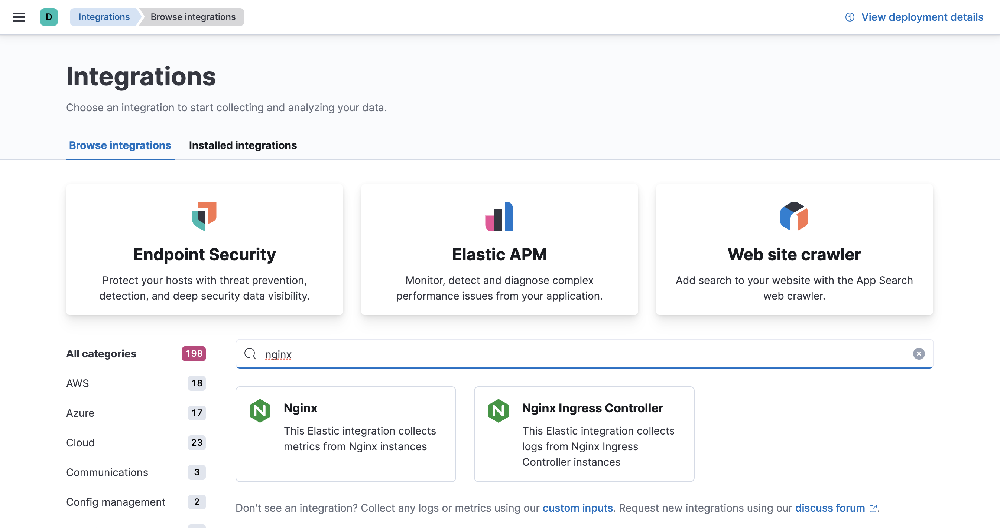

Ingest logs, metrics, and uptime data with Elastic Agentedit
This guide describes how to:
- Set up Fleet
- Send data to the Elastic Stack using Elastic Agent
- Monitor logs and metrics from systems and services across your organization
- Monitor the availability of your HTTP, TCP, and ICMP services using the Synthetics integration
- Monitor Nginx logs and metrics using the Nginx integration
For feedback and questions, please contact us in the discuss forum.
Prerequisitesedit
-
You need Elasticsearch for storing and searching your data, and Kibana for visualizing and managing it. You can use our hosted Elasticsearch Service on Elastic Cloud (recommended), or self-manage the Elastic Stack on your own hardware.
Here’s what you need for each deployment type:
- Access to a deployment of our hosted Elasticsearch Service on Elastic Cloud. The Elasticsearch Service is available on AWS, GCP, and Azure. Try it out for free. This deployment must include an APM & Fleet node.
- User with the superuser role. See Built-in roles.
- Access to an Elasticsearch cluster and Kibana (version 7.17) with a basic license. Learn how to install the Elastic Stack on your own hardware.
- Secure, encrypted connection between Kibana and Elasticsearch. For more information, see Configure security for the Elastic Stack.
- User with the superuser role. See Built-in roles.
-
In the Elasticsearch configuration, the
built-in API key
service must be enabled.
(
xpack.security.authc.api_key.enabled: true) -
In the Kibana configuration, the saved objects encryption key
must be set. Fleet requires this setting in order to save API keys and encrypt
them in Kibana. You can either set
xpack.encryptedSavedObjects.encryptionKeyto an alphanumeric value of at least 32 characters, or run thekibana-encryption-keyscommand to generate the key.
Example security settings
For testing purposes, you can use the following settings to get started quickly, but make sure you properly secure the Elastic Stack before sending real data.
elasticsearch.yml example:
xpack.security.enabled: true xpack.security.authc.api_key.enabled: true
kibana.yml example:
elasticsearch.username: "kibana_system" xpack.security.enabled: true xpack.encryptedSavedObjects.encryptionKey: "something_at_least_32_characters"
The password should be stored in the Kibana keystore as described in the Elasticsearch security documentation.
-
An internet connection is required for Kibana to download integration packages
from the Elastic Package Registry. Make sure the Kibana server can connect to
https://epr.elastic.coon port443. - Fleet is currently only available to users with the superuser role.
Step 1: Set up Fleetedit
Use Fleet in Kibana to get logs, metrics, and security data into the Elastic Stack.
Not using Fleet? Advanced users who want to configure and manage Elastic Agents manually can run agents standalone.
The first time you use Fleet, you might need to set it up and add a Fleet Server:
Elastic Cloud runs a hosted version of Fleet Server. No extra setup is required unless you want to scale your deployment.
To confirm that Fleet Server is available in your deployment:
- Log in to Kibana and go to Management > Fleet.
- Click the Agents tab.
- Under Agent policy, look for Elastic Cloud agent policy — Fleet Server is the agent enrolled in the Elastic Cloud agent policy. This policy is managed by Elastic Cloud. You cannot modify it. Confirm that the agent status is Healthy.
Don’t see the Fleet Server agent? Make sure your deployment includes an APM & Fleet node. This node is required to use Fleet Server.

When using our hosted Elasticsearch Service, it’s recommended that you use our hosted version of Fleet Server. However, you can choose to deploy and self-manage Fleet Servers.
To deploy a self-managed Fleet Server, install an Elastic Agent and enroll it in an agent policy containing the Fleet Server integration.
You can install only a single Elastic Agent per host, which means you cannot run Fleet Server and another Elastic Agent on the same host unless you deploy a containerized Fleet Server.
- Log in to Kibana and go to Management > Fleet. The first time you visit this page, it might take a minute to load.
-
Click Fleet settings, and in the Fleet Server hosts field, specify the
URLs Elastic Agents will use to connect to Fleet Server. For example,
https://192.0.2.1:8220, where192.0.2.1is the host IP where you will install Fleet Server. -
In the Elasticsearch hosts field, specify the Elasticsearch URLs where Elastic Agents will send data. For example,
https://192.0.2.0:9200.For more information about these settings, see Fleet settings.
- Save and apply the settings.
-
Click the Agents tab and follow the in-product instructions to add a Fleet server:

Notes:
- Make sure you download an x64 architecture installation package.
-
For the agent policy, choose one with a Fleet Server integration. If one doesn’t exist, create it.
- If you choose Production deployment mode, learn how to generate certs in Encrypt traffic in clusters with a self-managed Fleet Server.
-
It’s recommended you generate a unique service token for each
Fleet Server. For other ways to generate service tokens, see
elasticsearch-service-tokens. -
The
installcommand installs the Elastic Agent as a managed service and enrolls it in a Fleet Server policy. For example, the following command installs a Fleet Server and uses self-signed certs:sudo ./elastic-agent install -f \ --fleet-server-es=http://localhost:9200 \ --fleet-server-service-token=AAEbAWVsYXN0aWMvZmxlaXQtc2VydmVzL3Rva2VuLTE2MeIzNTY1NTQ3Mji6dERXeE9XbW5RRTZqNlJMWEdIRzAtZw \ --fleet-server-policy=27467ed1-1bfd-11ec-9b88-a7c3d83e2897 --fleet-server-insecure-http
The following command installs a Fleet Server and uses certificates you provide. Make sure you replace the values in angle brackets.
sudo ./elastic-agent install --url=https://192.0.2.1:8220 \ -f \ --fleet-server-es=https://192.0.2.0:9200 \ --fleet-server-service-token=AAEAaWVsYXN0aWcvZmxlZXQtc2VydmVyL3rva2VuLTE2MzIzNTYcNTQ3MjI6dER1eE9XbW5RRTZqNlJMWEdIRzAtZw \ --fleet-server-policy=27467ed1-1bfd-11ec-9b88-a7c3d83e2897 \ --certificate-authorities=<PATH_TO_CA> \ --fleet-server-es-ca=<PATH_TO_ES_CERT> \ --fleet-server-cert=<PATH_TO_FLEET_SERVER_CERT> \ --fleet-server-cert-key=<PATH_TO_FLEET_SERVER_CERT_KEY>
For more Fleet Server commands, see Elastic Agent command reference.
If installation is successful, you’ll see the Fleet Server Elastic Agent on the Agents tab in Fleet. Notice that the Default Fleet Server Policy is assigned to the Elastic Agent. This policy is created when you run Fleet for the first time.

For more information, refer to Fleet Server.
Step 2: Add an Elastic Agent to Fleetedit
Elastic Agent is a single, unified agent that you can deploy to hosts or containers to collect data and send it to the Elastic Stack. Behind the scenes, Elastic Agent runs the Beats shippers or Elastic Endpoint required for your configuration.
To send logs and metrics to the Elastic Stack:
-
On the machine where you’ll run Elastic Agent, download and extract the installation package.
curl -L -O https://artifacts.elastic.co/downloads/beats/elastic-agent/elastic-agent-7.17.11-darwin-x86_64.tar.gz tar xzvf elastic-agent-7.17.11-darwin-x86_64.tar.gz
curl -L -O https://artifacts.elastic.co/downloads/beats/elastic-agent/elastic-agent-7.17.11-linux-x86_64.tar.gz tar xzvf elastic-agent-7.17.11-linux-x86_64.tar.gz
# PowerShell 5.0+ wget https://artifacts.elastic.co/downloads/beats/elastic-agent/elastic-agent-7.17.11-windows-x86_64.zip -OutFile elastic-agent-7.17.11-windows-x86_64.zip Expand-Archive .\elastic-agent-7.17.11-windows-x86_64.zip
Or manually:
- Download the Elastic Agent Windows zip file from the download page.
- Extract the contents of the zip file.
To simplify upgrading to future versions of Elastic Agent, we recommended that you use the tarball distribution instead of the DEB distribution.
curl -L -O https://artifacts.elastic.co/downloads/beats/elastic-agent/elastic-agent-7.17.11-amd64.deb sudo dpkg -i elastic-agent-7.17.11-amd64.deb
To simplify upgrading to future versions of Elastic Agent, we recommended that you use the tarball distribution instead of the RPM distribution.
curl -L -O https://artifacts.elastic.co/downloads/beats/elastic-agent/elastic-agent-7.17.11-x86_64.rpm sudo rpm -vi elastic-agent-7.17.11-x86_64.rpm
See the download page for other installation options.
- On the Agents tab in Fleet, click Add agent.
-
Under Enroll in Fleet, follow the in-product installation steps (skip the download step if you’ve already done it).

See the download page for other installation options.
Notes:
- Use the default agent policy to get started quickly. This policy includes a system integration for collecting logs and metrics from the host system. You can change the policy later.
-
On macOS, Linux (tar package), and Windows, run the
installcommand to install Elastic Agent as a managed service, enroll it in Fleet, and start the service. The DEB and RPM packages include a service unit for Linux systems with systemd, so use theenrollcommand instead ofinstall.You must run this command as the root user because some integrations require root privileges to collect sensitive data.
You must run this command as the root user because some integrations require root privileges to collect sensitive data.
Open a PowerShell prompt as an Administrator (right-click the PowerShell icon and select Run As Administrator).
From the PowerShell prompt, change to the directory where you installed Elastic Agent, and run:
You must run this command as the root user because some integrations require root privileges to collect sensitive data.
sudo elastic-agent enroll --url=<fleet_server_url> --enrollment-token=<enrollment_token> sudo systemctl enable elastic-agent sudo systemctl start elastic-agent
fleet_server_urlis the host and IP where Fleet Server is running, andenrollment_tokenis the enrollment token acquired from Fleet. Not sure where Fleet Server is running? Look at the Fleet settings in Kibana.The DEB package includes a service unit for Linux systems with systemd. On these systems, you can manage Elastic Agent by using the usual systemd commands. If you don’t have systemd, run
sudo service elastic-agent start.You must run this command as the root user because some integrations require root privileges to collect sensitive data.
sudo elastic-agent enroll --url=<fleet_server_url> --enrollment-token=<enrollment_token> sudo systemctl enable elastic-agent sudo systemctl start elastic-agent
fleet_server_urlis the host and IP where Fleet Server is running, andenrollment_tokenis the enrollment token acquired from Fleet.The RPM package includes a service unit for Linux systems with systemd. On these systems, you can manage Elastic Agent by using the usual systemd commands. If you don’t have systemd, run
sudo service elastic-agent start.If you see an "x509: certificate signed by unknown authority" error, you might be trying to enroll in a Fleet Server that uses self-signed certs. To fix this problem in a non-production environment, pass the
--insecureflag. For more information, refer to the troubleshooting guide.Refer to Installation layout for the location of installed Elastic Agent files.
Because Elastic Agent is installed as an auto-starting service, it will restart automatically if the system is rebooted.
To confirm that Elastic Agent is installed and running, go to the Agents tab in Fleet. Notice that the Default policy is assigned to the agent.

If the status hangs at Enrolling, make sure the elastic-agent process
is running.
If you run into problems:
- Check the Elastic Agent logs. If you use the default policy, agent logs and metrics are collected automatically unless you change the default settings. For more information, refer to View Elastic Agent logs in Fleet.
- Refer to the troubleshooting guide.
For information about managing Elastic Agent in Fleet, refer to Centrally manage Elastic Agents in Fleet.
Step 3: Monitor host logs and metricsedit
Next, view the data sent by Elastic Agent. Right now, Elastic Agent is only sending data about the host system because you haven’t configured the agent to collect data from other sources yet.
To see host logs and metrics:
- In Fleet, click the Data streams tab.
-
In the Actions column, navigate to the dashboards corresponding to the data stream. For example, to see host metrics, select one of the system datasets:

Then navigate to the [Metrics System] Host overview dashboard:

Step 4: Monitor services using real browsers and lightweight HTTP, TCP, and ICMP checksedit
[beta] This functionality is in beta and is subject to change. The design and code is less mature than official GA features and is being provided as-is with no warranties. Beta features are not subject to the support SLA of official GA features. Next, you’ll add the Elastic Synthetics integration, enabling you to monitor the status and response times of applications and services in real time. You can monitor the availability of network endpoints via HTTP, TCP, ICMP or Browser monitors.
Add the Elastic Synthetics integration to the default policy used by your agent. You use policies to manage settings across a group of agents. An agent policy may contain any number of integrations for collecting observability data from the various services running on your host.
-
In Kibana, select Add integrations, and search for the Elastic Synthetics integration.

-
Click the Elastic Synthetics integration to see more details about it, then click Add Elastic Synthetics.

-
On the Add Elastic Synthetics integration page, under Configure integration, enter the integration name and select your desired monitor type from the following monitor types:
HTTP
Connects via HTTP and verifies that the host returns the expected response.
For detailed information about HTTP options, refer to our Heartbeat documentation.
TCP
Connects via TCP and verifies the endpoint by sending and receiving a custom payload. By default, the hostname and port are required.
For detailed information about TCP options, refer to our Heartbeat documentation.
ICMP
Uses an ICMP
v4andv6Echo Request to ping the configured hosts. By default, the host name is required.For detailed information about ICMP options, refer to our Heartbeat documentation.
Browser
Runs automated tests using a real Chromium browser via the synthetics agent.
For detailed information about browser options, refer to our Heartbeat documentation.
NOTE: To create a browser monitor, you must use the elastic-agent-complete Docker container as this contains the dependencies to run browser monitors. To learn more, refer to Monitor using Elastic Agent and Fleet.
- Enter the URL you want to monitor for availability and select a monitor interval in seconds or minutes. By default, a monitoring schedule of every 3 minutes is selected.
- The HTTP and TCP monitor types both support TLS. Under TLS settings, select Enable TLS configuration. Click the down arrow next to advanced HTTP or TCP options, and then enter your required settings.
-
Under Apply to agent policy, select the
default policy.
- When you’re done, click Save and continue, then Save and deploy changes.
-
To see the updated policy, click the Default policy link.
The newly added Elastic Synthetics integration should appear under Integrations in the default policy, along with the System integration.

All Elastic Agents that use this policy will collect logs, metrics, and uptime data from the host.
- To view the data in the Uptime app, go to Observability > Uptime.
Step 5: Monitor Nginx logs and metricsedit
Next, you’ll browse a catalog of integrations, then add an Nginx integration to the default policy used by your agent.
For these steps, we assume that you have nginx running on some of your
infrastructure, and want to collect logs and metrics from it.
-
In Kibana, go back to Add integrations, and search for the Nginx integration.
 -
Click the Nginx integration to see more details about it, then click Add Nginx.

-
On the Add Nginx integration page, select the default policy.

- Under Configure integration, click the down arrow next to enabled streams and make sure the Paths are correct for your host. Inspect or change other settings
- When you’re done, save and deploy the changes.
-
To see the updated policy, click the Default policy link.
The newly added Nginx integration should appear under Integrations in the default policy, along with the System and Elastic Synthetics integrations.

All Elastic Agents that use this policy will collect logs and metrics from the Nginx server and the host, along with uptime data.
- To view the data, go to Management > Fleet, then click the Data streams tab.
- In the Actions column, navigate to the dashboards corresponding to the data stream.
What’s next?edit
- Now that data is streaming into the Elastic Stack, take your investigation to a deeper level! Use Elastic Observability to unify your logs, metrics, uptime, and application performance data.
- Want to protect your endpoints from security threats? Try Elastic Security. Adding endpoint protection is just another integration that you add to the agent policy!
- Are your eyes bleary from staring at a wall of screens? Create alerts and find out about problems while sipping your favorite beverage poolside.
- Want Elastic to do the heavy lifting? Use machine learning to detect anomalies.
- Got everything working like you want it? Roll out your agent policies to other hosts by deploying Elastic Agents across your infrastructure!